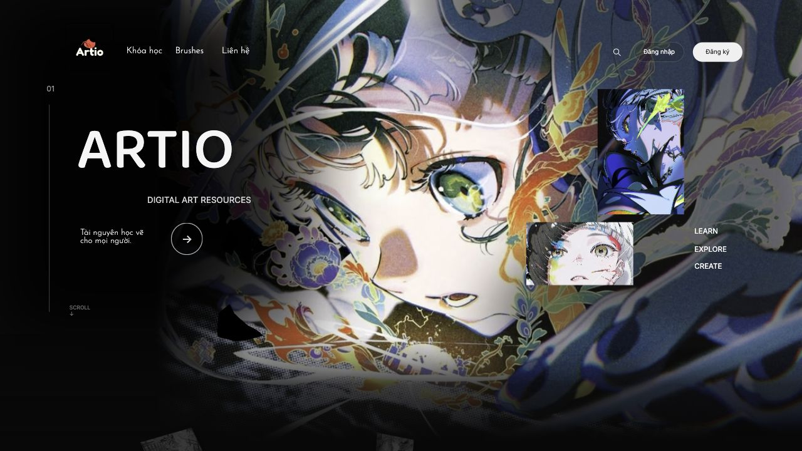

Bắt đầu với gói website ARTIO
Gói này giúp bạn chạy website, hiểu mỗi file dùng làm gì và giải thích được dữ liệu đi từ giao diện vào database như thế nào. Nếu chưa biết lập trình, đọc theo thứ tự 1 đến 4 dưới đây.
ARTIO-BAN-GIAO-20261007/
├── 01-Source-code/ Code website và dữ liệu mẫu
├── 02-Huong-dan/ Hướng dẫn này và hình minh họa
└── 03-BAO-CAO-THEO-TIEU-CHI.pdf Trả lời đủ 5 tiêu chí chấm điểmBáo cáo PDF ở ngay thư mục gốc. Phần source đã có giao diện mới nhất: Hero phóng lớn, About hai cột tranh, thẻ người mới và New Share tự chạy. Tài khoản ban đầu: admin / admin.
- Cách chạy: cài PHP, mở server, đăng nhập và xử lý lỗi thường gặp.
- Cấu trúc code: phân biệt HTML, CSS, JavaScript, PHP, API và database; biết muốn sửa gì thì mở file nào.
- Mô hình dữ liệu: đọc sơ đồ bảng, hiểu khóa chính/khóa ngoại và lý do dùng bảng nối.
- Luồng hoạt động và demo: giải thích từng thao tác rồi thực hành để kiểm tra.
Cần chuẩn bị gì
- Máy Windows, macOS hoặc Linux có PHP 8.1 trở lên với PDO SQLite và fileinfo. Windows có thể dùng PHP trong XAMPP.
- Trình duyệt như Chrome/Edge/Safari. Trình soạn thảo như VS Code chỉ cần khi đọc hoặc sửa code.
- Giải nén toàn bộ ZIP trước. Không mở file index.php bằng cách bấm đúp hoặc bằng tiện ích Live Server; PHP cần server xử lý.
- Không cần Node.js, npm hay MySQL để chạy bản local này. Python chỉ cần nếu muốn chạy bộ kiểm thử.
Dữ liệu nào có trong gói
Database mẫu có 6 khóa học, 3 brush, 4 danh mục và 1 admin. Giữ các giá trị chữ/ảnh CMS của bản giao diện hiện tại. Không kèm tài khoản người học, bình luận, hộp thư hoặc dữ liệu thử nghiệm. Bài học mẫu chưa phải bộ khóa học/video hoàn chỉnh; link lấy tài nguyên trống sẽ có thông báo đang cập nhật.
Website lưu thay đổi ngay trên máy bạn trong 01-Source-code/storage/artio.sqlite. Thay đổi không tự đồng bộ sang máy khác, Netlify hay VPS. Để chuyển bản đã chỉnh sang máy khác, cần mang cả database và thư mục uploads.
